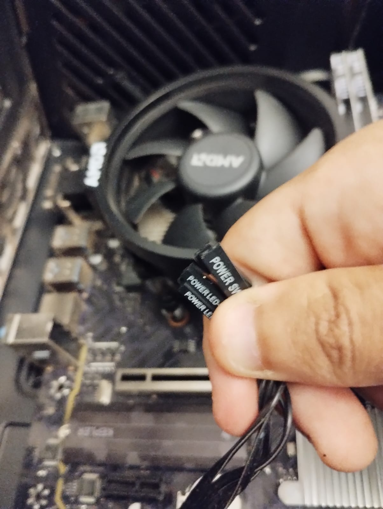
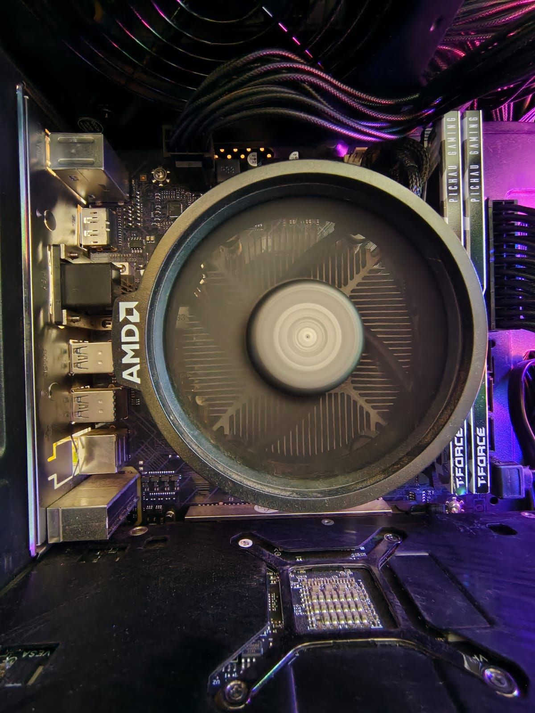
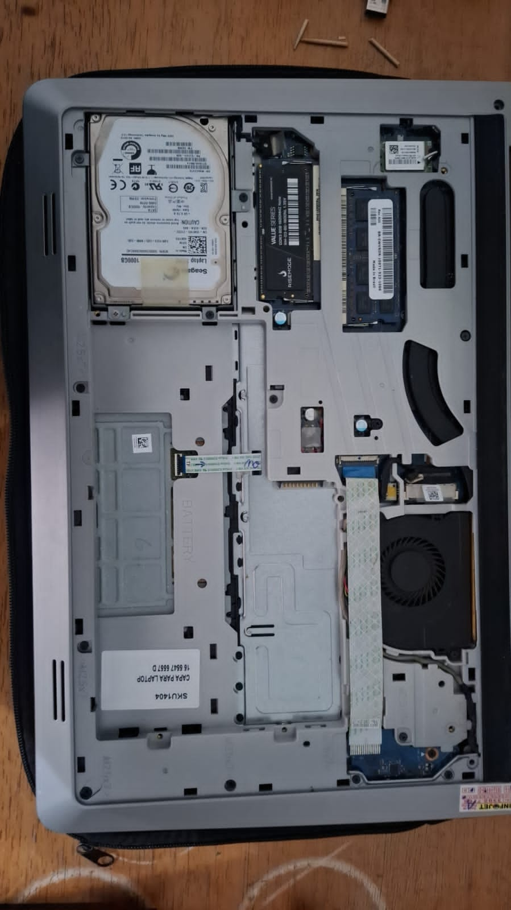

Multímetro
Mede tensão, continuidade e diodos para achar a peça com defeito.
Eu, Leonardo João Ramos Gomes, e meu pai consertamos PCs e notebooks na nossa bancada. Aprendi a arrumar ao lado dele, parafuso por parafuso.
01 · Sobre
Sou o Leonardo, um jovem de 19 anos, estudante de Ciências da Computação na UDF e sou católico.
Gosto de entender como as coisas funcionam por dentro. Tudo começou quando meu pai me chamou para ajudar a concertar coisas de modo geral, ele trabalhava em uma assistencia tecnica e acabou me ensinando a concertar pc, noteboock e ainda mexi com outras coisas como tv, forno, microondas dentre outros eletronicos.
Hoje ele ensina o que aprendeu em anos de bancada: ler esquemas, medir com o multímetro, soldar com calma. Eu trago a curiosidade e a paciência para pesquisar cada defeito.
Antes de trocar uma peça, a gente testa para ter certeza.
02 · Consertos
Escolha um aparelho para ver os defeitos mais comuns que atendemos.
03 · Ferramentas
Mede tensão, continuidade e diodos para achar a peça com defeito.
Para trocar conectores, cabos e componentes com calma e precisão.
Para abrir notebooks e PCs sem estragar os parafusos.
Troca para o computador parar de esquentar e de desligar sozinho.
04 · Bancada
Algumas fotos de serviçoes feitos.



05 · Processo
Conte qual aparelho está com problema e o que ele faz (ou deixa de fazer).
Chamar no WhatsApp · (61) 9 9991-3425Fontes e baterias podem causar choque ou incêndio. Não abra aparelhos sem experiência.